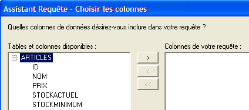
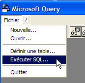
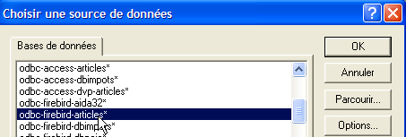

8. Installing and using an ODBC driver for [Firebird]
8.1. Installing the driver
There are many databases on the market. To standardize database access under MS Windows, Microsoft developed an interface called ODBC (Open DataBase Connectivity). This layer hides the specific features of each database behind a standard interface. There are many ODBC drivers available for MS Windows that facilitate database access. Here are, for example, some of the ODBC drivers installed on a Windows XP machine:

An application relying on these drivers can use any database without rewriting. The ODBC driver acts as an intermediary between the application and the DBMS. The Application <-> ODBC driver interface is standard. If you switch DBMSes, you simply install the ODBC driver for the new DBMS, and the application remains unchanged.
 |
The [firebird-odbc-provider] link on the [Firebird] downloads page (section 2.1) provides access to an ODBC driver. Once installed, it appears in the list of installed ODBC drivers.
8.2. Create an ODBC data source
- Launch the tool [Start -> Settings -> Configuration Tool -> Administrative Tools -> ODBC Data Sources]:

- The following window appears:

- Click [Add] to add a new system data source (in the [System DSN] pane) that we will associate with the Firebird database [dbarticles] we created in section 2.3:

- First, we need to specify the ODBC driver to use. Above, we select the driver for Firebird and then click [Finish]. The Firebird ODBC driver wizard then takes over:

- We fill in the various fields:

the DSN name of the ODBC source—can be anything | |
the name of the Firebird database to use—use [Browse] to select the corresponding .gbd file. Here, we are using the [dbarticles] database created on page 8. | |
the username to use to connect to the database | |
the password associated with this username |
The [Test connection] button allows you to verify the validity of the information you have entered. Before using it, start the [Firebird] DBMS:

- Confirm the ODBC wizard by clicking [OK] as many times as necessary
8.3. Test the ODBC source
There are various ways to verify that an ODBC source is working properly. Here, we will use Excel:

- Use the [Data -> External Data -> Create Query] option above. This opens the first window of the data source definition wizard. The [Databases] pane lists the ODBC sources currently defined on the machine:

- Select the ODBC source [odbc-firebird-articles] that we just created and proceed to the next step by clicking [OK]:

- This window lists the tables and columns available in the ODBC source. We’ll select the entire table:

- Proceed to the next step by clicking [Next]:

- This step allows us to filter the data. Here, we won’t filter anything and will proceed to the next step:

- This step allows us to sort the data. We won’t do that and will move on to the next step:

- The last step asks what we want to do with the data. Here, we export it to Excel:

- Here, Excel asks where we want to place the retrieved data. We place it in the active sheet starting from cell A1. The data is then retrieved in the Excel sheet:

There are other ways to test the validity of an ODBC source. For example, you can use the free OpenOffice suite available at [http://www.openoffice.org]. Here is an example using OpenOffice Text:
 |  |
- An icon on the left side of the OpenOffice window provides access to data sources. The interface then changes to display a data source management area:

- A data source is predefined: the [Bibliography] source. Right-clicking on the data sources area allows us to create a new one using the [Manage Data Sources] option:

- A [Data Source Management] wizard allows you to create data sources. Right-clicking on the data sources area allows you to create a new one using the [New Data Source] option:

Any name. Here we have used the name of the ODBC source | |
OpenOffice can handle various database types via JDBC, ODBC, or directly (MySQL, Dbase, etc.). For our example, select ODBC | |
The button to the right of the input field gives us access to the list of ODBC sources on the machine. We select the source [odbc-firebird-articles] |
- We switch to the [ODBC] panel to define the user under whose credentials the connection will be made:

The owner of the ODBC source |
- Go to the [Tables] panel. You will be prompted for the password. Here, it is [masterkey]:

- Click [OK]. The list of tables in the ODBC source is then displayed:

- You can select the tables to be displayed in the [OpenOffice] document. Here, we select the [ARTICLES] table and click [OK]. The data source definition is complete. It then appears in the list of data sources for the active document:

- You can drag the [ARTICLES] table from above into the [OpenOffice] document using the mouse.
8.4. Microsoft Query
Although MS Query is included with MS Office, there isn’t always a shortcut to this program. It can be found in the Office folder of MS Office under the name MSQRY32.EXE. For example, "C:\Program Files\Office 2000\Office\MSQRY32.EXE". MS Query allows you to query any ODBC data source using SQL queries. These can be built graphically or typed directly on the keyboard. Since most Windows databases provide ODBC drivers, they can all be queried using MS Query. When MS Query is launched, the following screen appears:

First, we need to specify the ODBC data source to be queried. To do this, use the option: File/New:

We will use the ODBC source created earlier. MS Query then displays the structure of the source:

We click the [Cancel] button because the wizard is not very useful if you know SQL. We can run SQL queries on the selected ODBC source using the [File / Execute SQL] option:
 |  |
We are prompted to select the ODBC source again:

Once the ODBC source is selected, we can execute SQL commands on it:

We obtain the following result:

The reader is invited to create an ODBC source with the Firebird DBBIBLIO database and to repeat the previous examples.